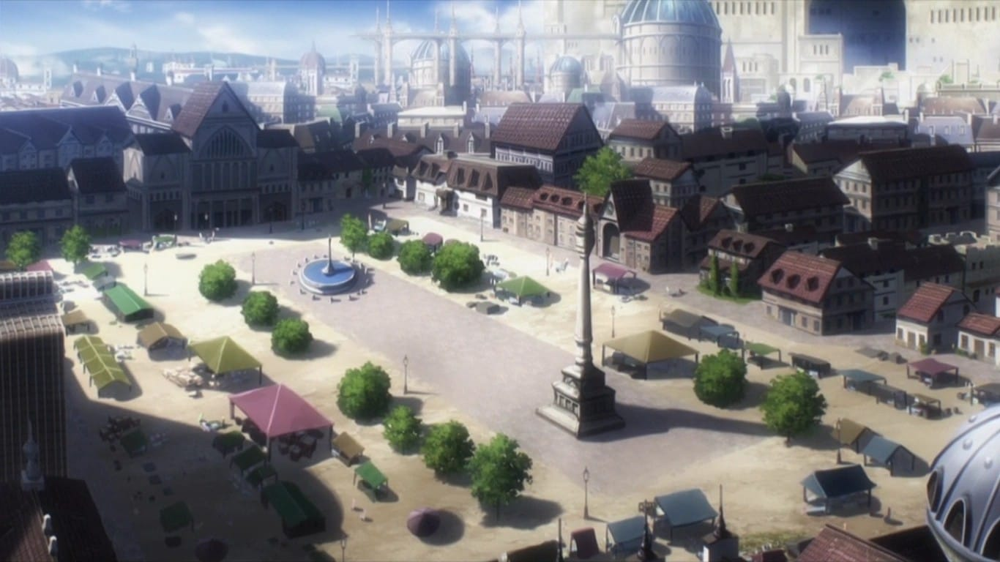
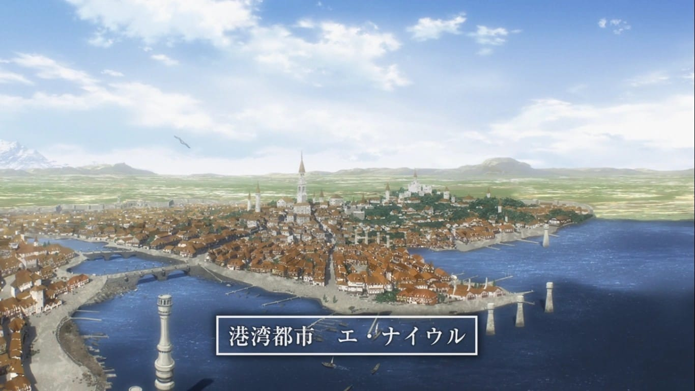
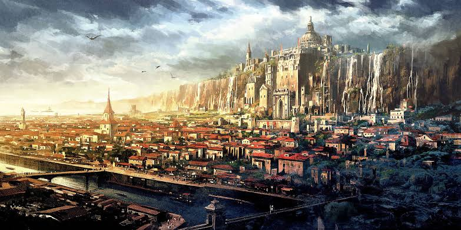
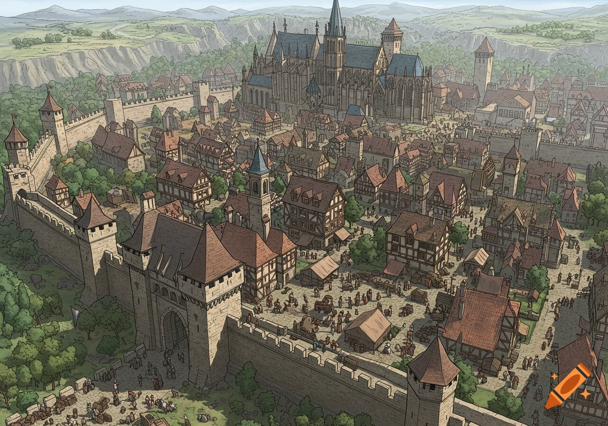
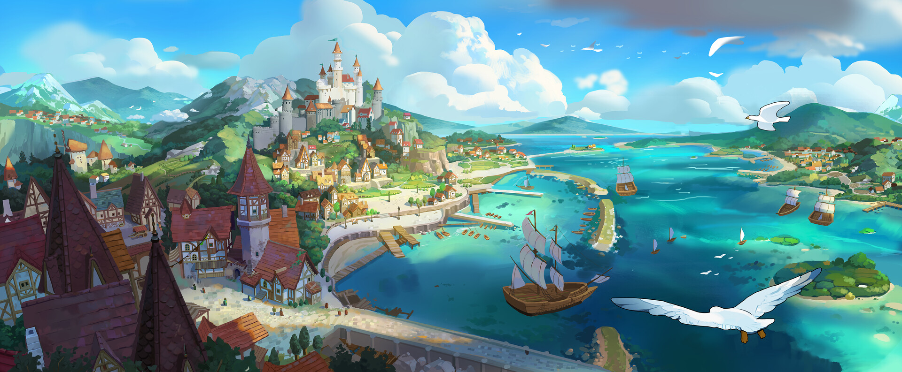
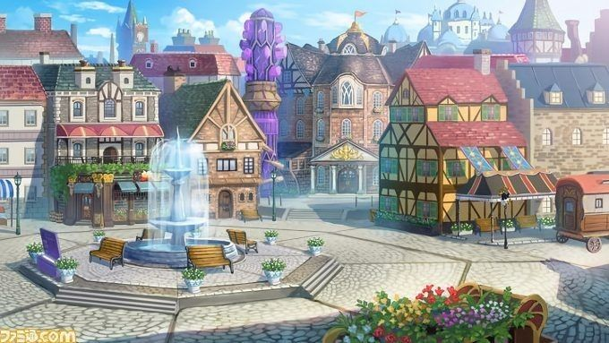
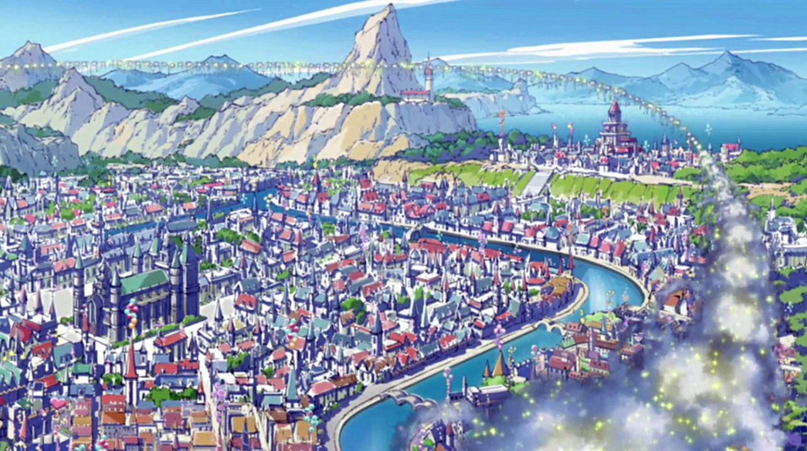
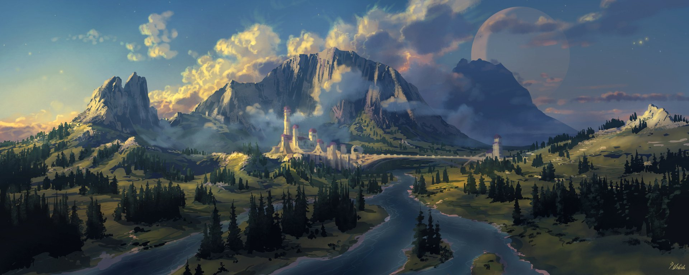

Uma das maiores e mais antigas nações humanas do continente no universo de Overlord. Fundado há mais de dois séculos, o reino
tornou-se uma potência graças às suas vastas terras férteis, ao intenso comércio e à força de sua nobreza. Durante muito tempo,
foi considerado um símbolo de prosperidade e estabilidade,
abrigando uma grande população distribuída entre cidades fortificadas, vilarejos agrícolas e importantes centros comerciais.
E-Rantel

Uma cidade fortaleza estrategicamente localizada próxima à fronteira, famosa por suas
três camadas de muralhas defensivas.
E-Naeurl

Uma pequena cidade localizada a oeste de Re-Uroval. Embora possua uma população modesta,
funciona como ponto de descanso para viajantes e caravanas, além de servir como centro administrativo
para os povoados da região oeste do reino.
E-Asenal

Uma importante cidade fronteiriça localizada a noroeste do reino,
próxima às terras da Aliança do Conselho de Argland.
Sua posição estratégica faz dela um centro de vigilância, comércio e diplomacia,
sendo um ponto de passagem para mercadores e viajantes vindos do norte.
E-Pespel

Situada a sudeste de Re-Robel, E-Pespel é uma pequena cidade voltada ao comércio regional e ao apoio
das comunidades rurais vizinhas.
Sua localização favorece a circulação de mercadorias entre os vilarejos do sul e os grandes centros urbanos.
Re-Robel

Encontra-se ao sudoeste da capital e é conhecida por suas extensas terras férteis.
A agricultura e a pecuária representam as principais atividades econômicas da cidade,
que desempenha papel fundamental no abastecimento alimentar da população.
Re-Beauleuror

Situada a noroeste da capital, Re-Beauleuror é uma cidade de médio porte conhecida por sua agricultura e
pelas rotas comerciais que ligam as regiões centrais às fronteiras do reino.
Sua economia depende principalmente da produção agrícola e do comércio terrestre.
Re-Uroval

Localiza-se ao norte de Re-Blumrushur e atua como um importante centro regional para as comunidades do norte.
A cidade serve como ponto de apoio para viajantes, comerciantes e patrulhas
responsáveis pela segurança das estradas que atravessam essa região do reino.
Re-Blumrushur

Próxima às Montanhas Azerlisia, Re-Blumrushur é uma das principais cidades mineradoras de Re-Estize.
Sua economia é sustentada pela extração de ferro, carvão e outros minerais, abastecendo ferreiros e artesãos de diversas partes do reino.